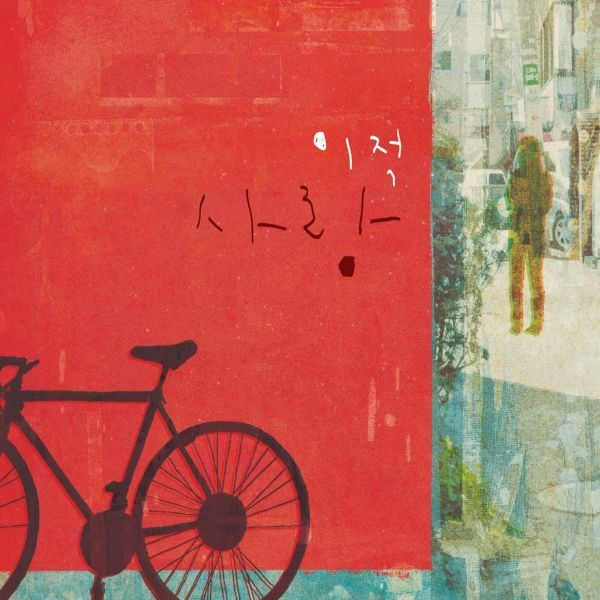

안녕하세요, 라보엠입니다.
날씨 좋은 주말 아침입니다. 세탁기에 빨래를 넣다가 문득 이 노래가 생각났습니다. 이적의 대표곡 중 하나인 ‘빨래’ 입니다. ‘다행이다’ 이후 3년 만에 공개된 이 곡은, 이적 특유의 담백한 목소리와 진솔한 가사가 어우러져 많은 이들의 사랑을 받고 있습니다. 일상에서 누구나 겪는 상실과 아픔, 그리고 그 속에서 다시 일어설 힘을 찾아가는 과정을 빨래라는 일상에 빗대어 노래하고 있습니다.
이적 - 빨래, 일상의 슬픔을 씻어내는 노래
‘빨래’는 제목처럼 아주 평범한 일상에서 출발합니다. “빨래를 해야겠어요, 오후엔 비가 올까요, 그래도 상관은 없어요, 괜찮아요”라는 첫 구절은, 이별 후 무기력한 마음을 담담하게 표현하고 있습니다. 뭔가라도 해야만 할 것 같은 마음, 그러면 조금은 나아질까 하는 기대. 하지만 마음처럼 쉽지 않은 현실. 이적은 이 곡을 통해, 누구나 겪는 이별의 아픔과 그리움을 솔직하게 드러내고 있습니다.
이적 빨래 가사와 멜로디의 힘
빨래를 해야겠어요
오후엔 비가 올까요
그래도 상관은 없어요
괜찮아요
뭐라도 해야만 할 것 같아요
그러면 나을까 싶어요
잠시라도 모두
잊을 수 있을지 몰라요
그게 참 맘처럼 쉽지가 않아서
그게 참 말처럼 되지가 않아서
무너진 가슴이 다시 일어설 수 있게
난 어떡해야 할까요
어떻게 해야만 할까요
그대가 날 떠난 건지
내가 그댈 떠난 건지
일부러 기억을 흔들어 뒤섞어도
금세 또 앙금이 가라앉듯
다시금 선명해져요
잠시라도 모두 잊을 수 있을까 했는데 음 음
그게 참 맘처럼 쉽지가 않아서
그게 참 말처럼 되지가 않아서
무너진 가슴이 다시 일어설 수 있게
난 어떡해야 할까요
어떻게 해야만 할까요
뒤집혀 버린 마음이 사랑을 쏟아내도록
그래서 아무것도 남김없이 비워내도록
난 이를 앙다물고 버텨야 했죠
하지만 여태 내 가슴속엔 후 예 예
그게 참 말처럼 쉽게 되지가 않아서
무너진 가슴이 다시 일어설 수 있게
난 어떡해야 할까요
어떻게 해야만 할까요
빨래를 해야겠어요
오후엔 비가 올까요
이 곡의 가사는 복잡한 미사여구 없이, 솔직하고 간결하게 마음을 건드립니다.
“그게 참 맘처럼 쉽지가 않아서, 그게 참 말처럼 되지가 않아서
무너진 가슴이 다시 일어설 수 있게, 난 어떻게 해야 할까요, 어떻게 해야만 할까요”
이런 구절들은, 마음이 힘들 때 무언가를 하며 버텨보려는 우리의 모습을 그대로 담아냅니다.
빨래라는 것은 집안일뿐이지만, 이적은 이를 통해 상처받은 마음을 씻어내고, 다시 일어설 힘을 찾으려는 인간의 본능적인 몸부림을 노래하고 있습니다. 곡의 멜로디는 담백한 피아노와 잔잔한 스트링이 어우러져, 이적의 목소리와 가사의 감정을 더욱 깊게 전달해줍니다.
이적의 보컬과 음악적 색채
‘빨래’에서 이적의 보컬은 불필요한 힘을 빼고, 한숨과도 같은 목소리로 노래합니다. 때로는 속삭이듯, 때로는 절규하듯, 감정의 진폭을 섬세하게 표현합니다. 이 곡을 듣다 보면, 슬픈 노래임에도 불구하고 끝맛이 깔끔하게 남는 것이 이적 음악의 특징입니다.
과장되지 않은 진솔함, 그리고 누구나 공감할 수 있는 일상의 언어가 이 곡의 가장 큰 매력입니다.
이적은 한 인터뷰에서, 후배 가수와의 대화에서 “빨래나 하려고요. 오후에 비 온다 그랬나?”라는 말에서 영감을 얻었다고 밝혔습니다. 이처럼 ‘빨래’는 특별한 사건이 아닌, 누구나 겪는 일상에서 출발한 곡입니다. 그래서인지, 듣는 이로 하여금 자신의 경험과 감정을 자연스럽게 투영하게 만듭니다.
공감과 위로의 메시지
‘빨래’는 이별의 아픔을 직접적으로 호소하고 있진 않습니다. 대신, 무기력한 마음을 달래기 위해 무언가를 해보려는 작은 몸짓을 통해, 듣는 이들에게 조용한 위로를 건네줍니다. “뒤집혀 버린 마음이 사랑을 쏟아내도록, 그래서 아무것도 남김없이 비워내도록, 난 이를 앙다물고 버텨야 했죠”라는 가사처럼, 누구나 한 번쯤 겪었을 법한 감정이 곡 전체에 녹아 있습니다.
맺음말
이적의 노래 ‘빨래’는 평범한 일상 속에서 슬픔을 견디고, 다시 일어설 수 있는 용기를 노래하고 있습니다. 담담한 언어와 멜로디, 그리고 이적만의 따뜻한 시선이 어우러져, 듣는 이의 마음을 조용히 어루만져줍니다. 오늘 하루, 마음이 무겁고 힘들다면, 이 곡과 함께 작은 위로를 받아보는 건 어떨까요? 빨래를 하듯, 마음의 먼지도 조금은 씻겨나가길 바라며, 이적의 음악이 여러분 곁에 오래 머물기를 기대해봅니다.
